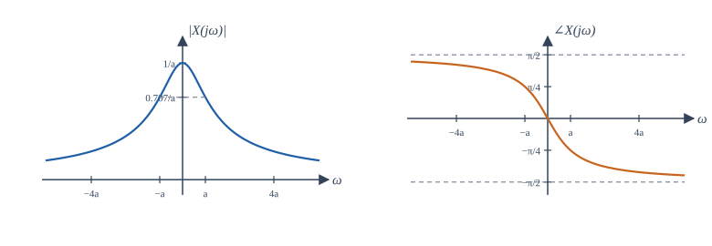
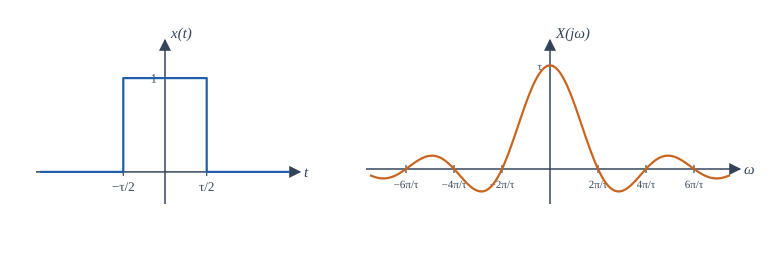
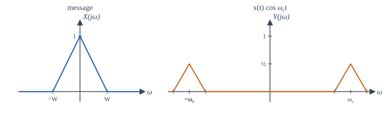

Chapter 6: The Continuous-Time Fourier Transform¶
The spectrum of an aperiodic signal, its properties, and filtering as multiplication
Learning outcomes
After this chapter you should be able to:
- obtain the Fourier transform as the limit of the Fourier series of a periodic signal whose period grows without bound;
- compute the transforms of the standard signals and use a table of pairs;
- apply the properties (shift, scaling, duality, differentiation, convolution, modulation, Parseval) to find transforms without integrating;
- use the frequency response \(H(j\omega)\) to find the output of an LTI system;
- represent periodic signals by impulses in frequency, and explain the trade-off between duration and bandwidth.
6.1 From series to transform¶
The Fourier series describes periodic signals. Most signals of interest are not periodic: a spoken word, a radar pulse, the response of a circuit to a switch being closed. The trick for extending Fourier's idea to them is to regard an aperiodic signal as a periodic one whose period is infinitely long.
Take a pulse \(x(t)\) that is zero outside some interval, and build a periodic signal \(\tilde{x}(t)\) by repeating it every \(T_0\) seconds, with \(T_0\) long enough that the copies do not overlap. Its Fourier coefficients are
because within one period \(\tilde{x}\) equals \(x\), and \(x\) is zero elsewhere. Define the function
Then \(a_k = \frac{1}{T_0}X(jk\omega_0)\): the Fourier coefficients are samples of one fixed function, spaced \(\omega_0 = 2\pi/T_0\) apart, scaled by \(1/T_0\). We saw exactly this in Figure 5.1, where the coefficients of a pulse train sat on a sinc envelope. The synthesis equation becomes
As \(T_0 \to \infty\), \(\tilde{x}\) becomes \(x\), the spacing \(\omega_0\) becomes an infinitesimal \(d\omega\), the samples \(k\omega_0\) become a continuous variable \(\omega\), and the sum becomes an integral. The result is the Fourier transform pair.
6.2 The Fourier transform pair¶
We write \(x(t) \leftrightarrow X(j\omega)\). The function \(X(j\omega)\) is the spectrum of \(x\). The synthesis equation says that \(x\) is a continuous superposition of complex exponentials \(e^{j\omega t}\); the amount at frequency \(\omega\) is \(\frac{1}{2\pi}X(j\omega)\,d\omega\). Unlike the line spectrum of a periodic signal, the spectrum of an aperiodic signal is spread continuously over frequency, and \(X(j\omega)\) is a density: it has the units of the signal multiplied by time.
The notation \(X(j\omega)\), rather than \(X(\omega)\), is chosen to match the Laplace transform \(X(s)\) of Chapter 10, which equals the Fourier transform on the line \(s = j\omega\). Some books use the frequency \(f\) in hertz instead of \(\omega\); then \(X(f) = \int x(t)e^{-j2\pi ft}dt\) and \(x(t) = \int X(f)e^{j2\pi ft}df\), with no \(2\pi\) in front. The two conventions are related by \(\omega = 2\pi f\). Formulas in this book use \(\omega\).
Existence. The transform exists (as an ordinary function) if \(x\) is absolutely integrable, \(\int|x(t)|\,dt < \infty\), and satisfies Dirichlet-type conditions like those of Section 5.5. It also exists, in the energy sense, for every finite-energy signal. Signals such as constants, sinusoids and the step are neither absolutely integrable nor of finite energy, but they have transforms if we allow impulses in frequency (Section 6.6). Growing signals such as \(e^{t}u(t)\) have no Fourier transform; for them we need the Laplace transform.
6.3 Standard transform pairs¶
Example 6.1 The decaying exponential
For \(x(t) = e^{-at}u(t)\) with \(a > 0\):
The upper limit vanishes because \(|e^{-(a+j\omega)t}| = e^{-at} \to 0\). The magnitude and phase are
The magnitude is largest at \(\omega = 0\) and falls to \(1/\sqrt2\) of its peak at \(\omega = a\); the phase goes from \(0\) to \(-\pi/2\) (Figure 6.1). A faster decay (larger \(a\)) means a wider spectrum.

Example 6.2 The rectangular pulse
For a pulse of height 1 and width \(\tau\) centred at the origin, \(x(t) = \mathrm{rect}(t/\tau)\):
The spectrum is real (the pulse is real and even), equal to \(\tau\) (the pulse area) at \(\omega = 0\), and zero at \(\omega = 2\pi m/\tau\) for every non-zero integer \(m\). The main lobe extends from \(-2\pi/\tau\) to \(2\pi/\tau\), so its width is inversely proportional to the pulse width.

Example 6.3 The impulse
\(\delta(t) \leftrightarrow \int\delta(t)e^{-j\omega t}dt = 1\). An impulse contains every frequency in equal amount. This is why striking a system with a hammer (an approximate impulse) reveals its whole frequency response, and why a lightning flash causes crackles across the whole radio band.
Table 6.1 collects the pairs used most often. The entries with impulses in frequency are justified in Section 6.6.
| \(x(t)\) | \(X(j\omega)\) | Condition |
|---|---|---|
| \(\delta(t)\) | \(1\) | |
| \(\delta(t - t_0)\) | \(e^{-j\omega t_0}\) | |
| \(1\) | \(2\pi\delta(\omega)\) | |
| \(e^{j\omega_0 t}\) | \(2\pi\delta(\omega - \omega_0)\) | |
| \(\cos\omega_0 t\) | \(\pi[\delta(\omega - \omega_0) + \delta(\omega + \omega_0)]\) | |
| \(\sin\omega_0 t\) | \(\dfrac{\pi}{j}[\delta(\omega - \omega_0) - \delta(\omega + \omega_0)]\) | |
| \(u(t)\) | \(\dfrac{1}{j\omega} + \pi\delta(\omega)\) | |
| \(\mathrm{sgn}(t)\) | \(\dfrac{2}{j\omega}\) | |
| \(e^{-at}u(t)\) | \(\dfrac{1}{a + j\omega}\) | \(a > 0\) |
| \(t\,e^{-at}u(t)\) | \(\dfrac{1}{(a + j\omega)^2}\) | \(a > 0\) |
| \(e^{-a\lvert t\rvert}\) | \(\dfrac{2a}{a^2 + \omega^2}\) | \(a > 0\) |
| \(\mathrm{rect}(t/\tau)\) | \(\tau\,\mathrm{sinc}(\omega\tau/2\pi)\) | |
| \(\dfrac{\sin Wt}{\pi t}\) | \(1\) for \(\lvert\omega\rvert < W\), \(0\) otherwise | |
| \(e^{-t^2/(2\sigma^2)}\) | \(\sigma\sqrt{2\pi}\,e^{-\sigma^2\omega^2/2}\) | \(\sigma > 0\) |
| \(\sum_n \delta(t - nT)\) | \(\dfrac{2\pi}{T}\sum_k\delta\!\left(\omega - \dfrac{2\pi k}{T}\right)\) |
Table 6.1. Common Fourier transform pairs.
The Gaussian is special: its transform is another Gaussian. It is the signal with the smallest possible product of duration and bandwidth (Section 6.7). The last row, the impulse train, transforms into another impulse train; it is the mathematical heart of sampling (Chapter 9).
6.4 Properties of the Fourier transform¶
The properties are the working tools of Fourier analysis. With a short table of pairs and the properties below, most transforms can be found without integrating. Let \(x \leftrightarrow X\) and \(y \leftrightarrow Y\).
| Property | Signal | Transform |
|---|---|---|
| Linearity | \(ax(t) + by(t)\) | \(aX(j\omega) + bY(j\omega)\) |
| Time shift | \(x(t - t_0)\) | \(e^{-j\omega t_0}X(j\omega)\) |
| Frequency shift | \(e^{j\omega_0 t}x(t)\) | \(X(j(\omega - \omega_0))\) |
| Time scaling | \(x(at)\) | \(\dfrac{1}{\lvert a\rvert}X\!\left(\dfrac{j\omega}{a}\right)\) |
| Time reversal | \(x(-t)\) | \(X(-j\omega)\) |
| Conjugation | \(x^*(t)\) | \(X^*(-j\omega)\) |
| Duality | \(X(jt)\) | \(2\pi\,x(-\omega)\) |
| Differentiation in time | \(\dfrac{dx}{dt}\) | \(j\omega\,X(j\omega)\) |
| Integration | \(\displaystyle\int_{-\infty}^{t}x(\tau)\,d\tau\) | \(\dfrac{X(j\omega)}{j\omega} + \pi X(0)\delta(\omega)\) |
| Differentiation in frequency | \(t\,x(t)\) | \(j\dfrac{dX(j\omega)}{d\omega}\) |
| Convolution | \(x(t) * y(t)\) | \(X(j\omega)\,Y(j\omega)\) |
| Multiplication | \(x(t)\,y(t)\) | \(\dfrac{1}{2\pi}X(j\omega) * Y(j\omega)\) |
| Real signal | \(x\) real | \(X(-j\omega) = X^*(j\omega)\) |
| Parseval | \(\displaystyle\int\lvert x(t)\rvert^2dt\) | \(\dfrac{1}{2\pi}\displaystyle\int\lvert X(j\omega)\rvert^2d\omega\) |
Table 6.2. Properties of the continuous-time Fourier transform.
A few deserve comment.
Time shift. Delaying a signal does not change \(|X|\); it adds a phase \(-\omega t_0\), a straight line through the origin with slope \(-t_0\). A system that delays all frequencies equally therefore has linear phase, a property prized in audio and data transmission because it preserves the shape of waveforms.
Scaling. Compressing a signal in time (\(a > 1\)) stretches its spectrum in frequency and lowers it. Playing a recording at double speed raises every pitch by an octave. This is the first sign of the time-bandwidth trade-off: a signal cannot be both short and narrow-band.
Duality. The forward and inverse transforms differ only in the sign of the exponent and the factor \(2\pi\), so every pair has a dual. Since \(\mathrm{rect}(t/\tau) \leftrightarrow \tau\,\mathrm{sinc}(\omega\tau/2\pi)\), a sinc in time has a rectangular spectrum: that is the pair \(\frac{\sin Wt}{\pi t} \leftrightarrow\) (1 for \(|\omega| < W\)) in Table 6.1. Since \(\delta(t) \leftrightarrow 1\), the constant \(1 \leftrightarrow 2\pi\delta(\omega)\).
Real signals. Conjugate symmetry \(X(-j\omega) = X^*(j\omega)\) means that the magnitude spectrum of a real signal is even and the phase spectrum is odd. The negative frequencies carry no new information; they are the mirror images that make the sum real.
Example 6.4 Using properties instead of integrals
Find the transform of \(y(t) = e^{-2(t - 3)}u(t - 3)\) and of \(z(t) = e^{-3|t|}\cos(10t)\).
For \(y\): it is \(x(t - 3)\) with \(x(t) = e^{-2t}u(t) \leftrightarrow \frac{1}{2 + j\omega}\). By the time-shift property, \(Y(j\omega) = \dfrac{e^{-j3\omega}}{2 + j\omega}\).
For \(z\): write \(\cos 10t = \frac12(e^{j10t} + e^{-j10t})\) and use \(e^{-3|t|} \leftrightarrow \frac{6}{9 + \omega^2}\) with the frequency-shift property:
The spectrum of \(e^{-3|t|}\), centred at zero, has been moved to \(\pm10\) and halved.
Example 6.5 Duality and the ideal low-pass filter
The ideal low-pass filter passes all frequencies below \(W\) unchanged and removes all others: \(H(j\omega) = 1\) for \(|\omega| < W\) and \(0\) otherwise. Its impulse response is
This \(h(t)\) is non-zero for \(t < 0\), so the ideal low-pass filter is not causal: it would have to respond before the input arrives. It is also not absolutely integrable (it decays only as \(1/t\)), so it is not BIBO stable. Ideal filters are a reference point, not something that can be built. Chapter 12 designs practical filters that approximate them.
6.5 The convolution property and the frequency response¶
The most important property is that convolution in time becomes multiplication in frequency:
Proof. \(Y(j\omega) = \int\!\!\int x(\tau)h(t - \tau)\,d\tau\,e^{-j\omega t}dt\). Substitute \(t = \tau + \sigma\) and separate: \(\int x(\tau)e^{-j\omega\tau}d\tau\int h(\sigma)e^{-j\omega\sigma}d\sigma = X(j\omega)H(j\omega)\).
The transform of the impulse response, \(H(j\omega)\), is the frequency response of the system: it is exactly the eigenvalue of Section 4.8 for \(s = j\omega\). Writing \(H(j\omega) = |H(j\omega)|e^{j\angle H(j\omega)}\), the system multiplies the amplitude of each frequency component by the gain \(|H(j\omega)|\) and shifts its phase by \(\angle H(j\omega)\). In terms of magnitudes and phases,
This gives a second route to the output of an LTI system: transform the input, multiply by \(H\), and transform back. For systems described by differential equations, the route is especially simple. Transforming \(\sum a_k \frac{d^k y}{dt^k} = \sum b_k\frac{d^k x}{dt^k}\) term by term with the differentiation property gives
a ratio of polynomials in \(j\omega\) that can be written down by inspection.
Example 6.6 Response of a first-order system
The system \(\frac{dy}{dt} + 2y = x(t)\) is driven by \(x(t) = e^{-t}u(t)\). Find \(y(t)\), assuming initial rest.
By inspection, \(H(j\omega) = \dfrac{1}{j\omega + 2}\), and \(X(j\omega) = \dfrac{1}{j\omega + 1}\). So
by partial fractions (check: the right side is \(\frac{(j\omega + 2) - (j\omega + 1)}{(j\omega+1)(j\omega+2)}\)). Each term is in the table, so \(y(t) = (e^{-t} - e^{-2t})u(t)\). Compare Exercise 4.6, where a similar result came from a convolution integral; here only algebra was needed.
6.6 Periodic signals and the modulation property¶
Fourier transforms of periodic signals¶
Since \(1 \leftrightarrow 2\pi\delta(\omega)\), the frequency-shift property gives \(e^{j\omega_0 t} \leftrightarrow 2\pi\delta(\omega - \omega_0)\): a single complex exponential has all its "spectral mass" at one frequency. A periodic signal is a sum of such exponentials, so
The transform of a periodic signal is a train of impulses at the harmonic frequencies, with areas \(2\pi a_k\). In this way the Fourier transform includes the Fourier series as a special case, and periodic and aperiodic signals can be handled with one tool. The cosine and sine entries of Table 6.1 are the cases with only \(a_{\pm1}\) non-zero.
Modulation¶
The multiplication property says that multiplying two signals in time convolves their spectra (divided by \(2\pi\)). The most important case is multiplication by a sinusoid, called modulation. With \(\cos\omega_c t = \frac12(e^{j\omega_c t} + e^{-j\omega_c t})\) and the frequency-shift property,
The spectrum of \(x\) is copied to \(\pm\omega_c\) at half height (Figure 6.3). Radio works this way. A speech signal occupies frequencies up to a few kilohertz, which cannot be radiated efficiently and would collide with every other speech signal. Multiplying by a carrier at, say, 1 MHz moves the speech spectrum up to 1 MHz, where an antenna of reasonable size radiates it, and different stations can be placed at different carriers. Chapter 14 returns to this.

Example 6.7 Recovering a modulated message
A receiver multiplies the modulated signal \(y(t) = x(t)\cos\omega_c t\) by \(\cos\omega_c t\) again. What does it obtain?
\(y(t)\cos\omega_c t = x(t)\cos^2\omega_c t = \frac12 x(t) + \frac12 x(t)\cos 2\omega_c t\). The first term is the message (at half amplitude); the second is the message moved to \(\pm 2\omega_c\). If \(\omega_c > W\) the two do not overlap in frequency, and a low-pass filter with cut-off between \(W\) and \(2\omega_c - W\) keeps the message and removes the rest. This is synchronous demodulation.
6.7 Energy, bandwidth and the time-bandwidth trade-off¶
Parseval's relation for the transform,
says that energy can be computed in either domain. The function \(|X(j\omega)|^2\) is the energy spectral density: \(\frac{1}{2\pi}|X(j\omega)|^2d\omega\) is the energy in the band \(d\omega\). For \(x(t) = e^{-2t}u(t)\), the energy is \(\frac14\) by direct integration (Example 1.5), and \(\frac{1}{2\pi}\int\frac{d\omega}{4 + \omega^2} = \frac{1}{2\pi}\cdot\frac{\pi}{2} = \frac14\) in frequency.
The bandwidth of a signal is the width of the band of frequencies that contains most of its energy. There are several definitions (the half-power or 3 dB bandwidth, the width of the main lobe, the band containing 99% of the energy), and which is used depends on the application. Whatever the definition, the scaling property guarantees that duration and bandwidth are inversely proportional: compress a signal by a factor \(a\) and its bandwidth grows by \(a\). The product of duration and bandwidth cannot be made arbitrarily small. With duration and bandwidth measured as root-mean-square widths of \(|x(t)|^2\) and \(|X(j\omega)|^2\), the product is at least \(\frac12\), with equality only for the Gaussian; this is the signal-processing form of the uncertainty principle.
The trade-off has practical consequences everywhere. A radar that must resolve two targets close together needs short pulses, and therefore wide bandwidth. A data link that sends more symbols per second needs shorter symbols, and therefore more bandwidth. A musician who wants to hear the exact pitch of a note needs to listen for long enough.
6.8 Computing transforms numerically¶
The analysis integral can be approximated numerically for any signal that decays fast enough. The program below does this with the trapezoidal rule for two signals and compares the results with the formulas of Examples 6.1 and 6.2, then checks Parseval's relation. (np.trapezoid is the NumPy 2 name of the trapezoidal-rule function.)
import numpy as np
def ctft(x, t, w):
"""Approximate X(jw) = integral x(t) e^{-jwt} dt by the trapezoidal rule."""
return np.array([np.trapezoid(x * np.exp(-1j * wk * t), t) for wk in w])
t = np.linspace(-20, 20, 400_001)
w = np.array([0.0, 1.0, 2.0, 5.0])
# x(t) = e^{-2t} u(t) <-> 1 / (2 + jw)
x = np.where(t >= 0, np.exp(-2 * t), 0.0)
X = ctft(x, t, w)
for wk, Xk in zip(w, X):
exact = 1 / (2 + 1j * wk)
print(f"w = {wk:3.0f}: |X| = {abs(Xk):.4f} (exact {abs(exact):.4f}), "
f"angle = {np.degrees(np.angle(Xk)):7.2f} deg (exact {np.degrees(np.angle(exact)):7.2f})")
# rect pulse of width 1 <-> sin(w/2) / (w/2) = sinc(w / 2pi)
p = (np.abs(t) <= 0.5).astype(float)
P = ctft(p, t, np.array([np.pi, 2 * np.pi, 3 * np.pi]))
print("rect at w = pi, 2pi, 3pi:", np.round(P.real, 4), " exact:", np.round(np.sinc(np.array([0.5, 1, 1.5])), 4))
# Parseval for e^{-2t}u(t): energy 1/4 in time, (1/2pi) * integral |X|^2 dw in frequency
wf = np.linspace(-2000, 2000, 2_000_001)
E_freq = np.trapezoid(1 / (4 + wf ** 2), wf) / (2 * np.pi)
print(f"energy: time {np.trapezoid(x ** 2, t):.4f}, frequency {E_freq:.4f}")
w = 0: |X| = 0.5001 (exact 0.5000), angle = 0.00 deg (exact 0.00)
w = 1: |X| = 0.4473 (exact 0.4472), angle = -26.56 deg (exact -26.57)
w = 2: |X| = 0.3536 (exact 0.3536), angle = -44.99 deg (exact -45.00)
w = 5: |X| = 0.1857 (exact 0.1857), angle = -68.18 deg (exact -68.20)
rect at w = pi, 2pi, 3pi: [ 6.366e-01 -1.000e-04 -2.122e-01] exact: [ 0.6366 0. -0.2122]
energy: time 0.2501, frequency 0.2498
The small errors (in the fourth decimal place) come from the jumps of the signals: the trapezoidal rule treats a jump as a steep ramp one step wide. In the frequency-domain energy, the error comes from cutting the integral off at \(|\omega| = 2000\); the missing tail is about \(\frac{1}{2\pi}\cdot\frac{2}{2000} \approx 0.00016\). For signals given only as samples, Chapter 8 shows how the FFT computes many values of the spectrum at once.
6.9 Summary¶
Summary
- The Fourier transform \(X(j\omega) = \int x(t)e^{-j\omega t}dt\) and its inverse \(x(t) = \frac{1}{2\pi}\int X(j\omega)e^{j\omega t}d\omega\) describe an aperiodic signal as a continuous superposition of exponentials. It is the limit of the Fourier series as the period grows.
- Key pairs: \(e^{-at}u(t) \leftrightarrow 1/(a + j\omega)\); \(\mathrm{rect}(t/\tau) \leftrightarrow \tau\,\mathrm{sinc}(\omega\tau/2\pi)\); \(\delta(t) \leftrightarrow 1\); \(1 \leftrightarrow 2\pi\delta(\omega)\); \(\cos\omega_0 t \leftrightarrow \pi[\delta(\omega - \omega_0) + \delta(\omega + \omega_0)]\).
- A delay adds linear phase; compression widens the spectrum; differentiation multiplies by \(j\omega\); duality swaps the roles of time and frequency.
- Convolution in time is multiplication in frequency: \(Y = XH\). For a differential equation, \(H(j\omega)\) is a ratio of polynomials in \(j\omega\) written down by inspection.
- Periodic signals have impulsive spectra \(\sum 2\pi a_k\delta(\omega - k\omega_0)\). Multiplying by \(\cos\omega_c t\) shifts the spectrum to \(\pm\omega_c\).
- Parseval: energy is the same in both domains. Duration and bandwidth are inversely proportional.
6.10 Exercises¶
Exercise 6.1
Find the Fourier transform of \(x(t) = e^{-3t}u(t) + e^{3t}u(-t)\).
Answer
This is \(e^{-3|t|}\), so \(X(j\omega) = \dfrac{6}{9 + \omega^2}\). (Or add \(\frac{1}{3 + j\omega}\) and \(\frac{1}{3 - j\omega}\), using time reversal for the second.)
Exercise 6.2
Find the transform of a rectangular pulse of height 2 lasting from \(t = 0\) to \(t = 4\).
Answer
It is \(2\,\mathrm{rect}((t - 2)/4)\). So \(X(j\omega) = 2\cdot4\,\mathrm{sinc}(2\omega/\pi)\,e^{-j2\omega} = \dfrac{4\sin 2\omega}{\omega}e^{-j2\omega}\).
Exercise 6.3
Use differentiation in frequency to find the transform of \(t e^{-at}u(t)\).
Answer
\(t\,x(t) \leftrightarrow j\frac{d}{d\omega}\frac{1}{a + j\omega} = j\cdot\frac{-j}{(a + j\omega)^2} = \frac{1}{(a + j\omega)^2}\).
Exercise 6.4
A signal has \(X(j\omega) = 1\) for \(|\omega| < 5\) and 0 otherwise. Find \(x(t)\) and its value at \(t = 0\).
Answer
\(x(t) = \dfrac{\sin 5t}{\pi t}\), and \(x(0) = 5/\pi \approx 1.59\) (the area under \(X\) divided by \(2\pi\)).
Exercise 6.5
Find the frequency response of the system \(\frac{d^2y}{dt^2} + 3\frac{dy}{dt} + 2y = \frac{dx}{dt} + x\), and simplify it.
Answer
\(H(j\omega) = \dfrac{j\omega + 1}{(j\omega)^2 + 3j\omega + 2} = \dfrac{j\omega + 1}{(j\omega + 1)(j\omega + 2)} = \dfrac{1}{j\omega + 2}\).
Exercise 6.6
Find the output of the system with \(H(j\omega) = \frac{1}{2 + j\omega}\) for the input \(x(t) = \cos 2t\).
Answer
\(H(j2) = \frac{1}{2 + 2j} = \frac{1}{2\sqrt2}e^{-j\pi/4}\). So \(y(t) = \frac{1}{2\sqrt2}\cos(2t - \pi/4) \approx 0.354\cos(2t - \pi/4)\).
Exercise 6.7
Find the energy of \(x(t) = \dfrac{\sin 3t}{\pi t}\) using Parseval's relation.
Answer
\(X = 1\) for \(|\omega| < 3\), so \(E = \frac{1}{2\pi}\int_{-3}^{3}1\,d\omega = \frac{6}{2\pi} = \frac{3}{\pi}\).
Exercise 6.8
The signal \(x(t)\) has bandwidth 4 kHz. What is the bandwidth of \(x(3t)\), and of \(x(t/2)\)?
Answer
12 kHz and 2 kHz. Compressing by 3 stretches the spectrum by 3; expanding by 2 compresses it by 2.
Exercise 6.9
Find the Fourier transform of the periodic signal \(x(t) = 1 + \cos(4t)\).
Answer
\(X(j\omega) = 2\pi\delta(\omega) + \pi\delta(\omega - 4) + \pi\delta(\omega + 4)\).
Exercise 6.10
A message with spectrum confined to \(|\omega| < 2\pi\cdot 5000\) rad/s is multiplied by \(\cos(2\pi\cdot 10^5 t)\). Between which frequencies (in kHz) does the spectrum of the product lie (for positive frequencies)?
Answer
From 95 kHz to 105 kHz: the message band, 5 kHz wide on each side, is centred on the 100 kHz carrier.
6.11 Quiz¶
Check your understanding of Chapter 6
Exercise 1
The Fourier transform of δ(t − 2) is
- 1
- e^(−j2ω)
- e^(j2ω)
- 2πδ(ω − 2)
Answer
e^(−j2ω)
Exercise 2
Convolution in time corresponds in frequency to
- multiplication
- convolution
- differentiation
- addition
Answer
multiplication
Exercise 3
What is the value of the transform of a rectangular pulse of height 1 and width 3 at ω = 0?
Answer
3
X(0) is the area under the signal.
Exercise 4
Compressing a signal in time by a factor 2
- halves its bandwidth
- doubles its bandwidth
- leaves its bandwidth unchanged
- shifts its spectrum by 2
Answer
doubles its bandwidth
Exercise 5
The ideal low-pass filter is
- causal and stable
- non-causal
- a pure delay
- an integrator
Answer
non-causal
Its impulse response sin(Wt)/(πt) is non-zero for t < 0.
Exercise 6
For a real signal, the magnitude spectrum is ___ and the phase spectrum is odd.
Answer
even
Exercise 7
Match each signal with its transform.
| A | B |
|---|---|
| e^(−at)u(t) | 1 |
| 1 | 2/(jω) |
| δ(t) | 1/(a + jω) |
| sgn(t) | 2πδ(ω) |
Answer
e^(−at)u(t) — 1/(a + jω); 1 — 2πδ(ω); δ(t) — 1; sgn(t) — 2/(jω)